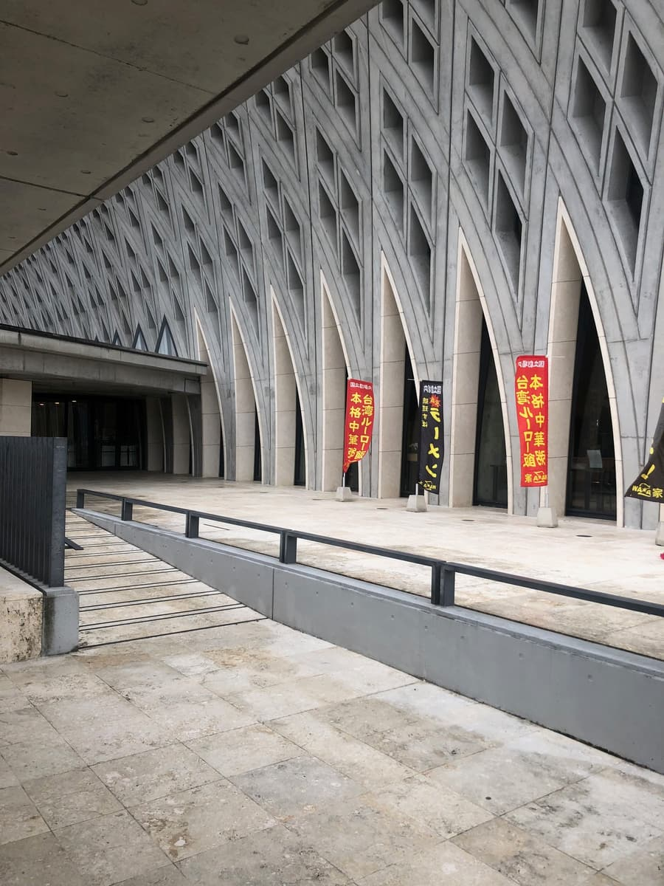
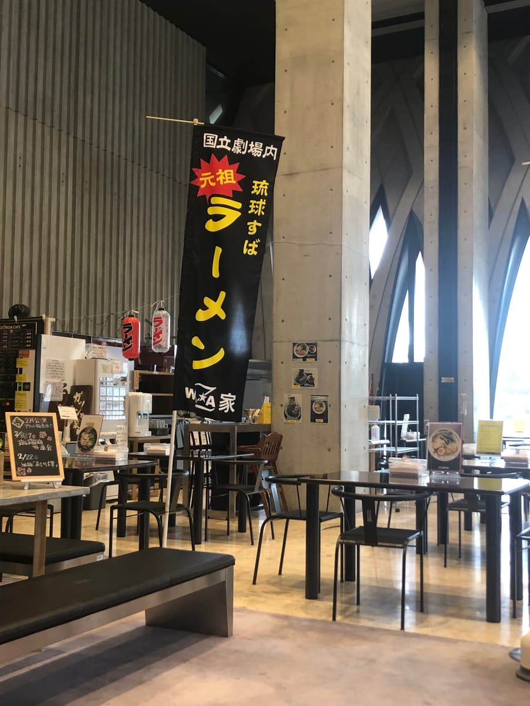
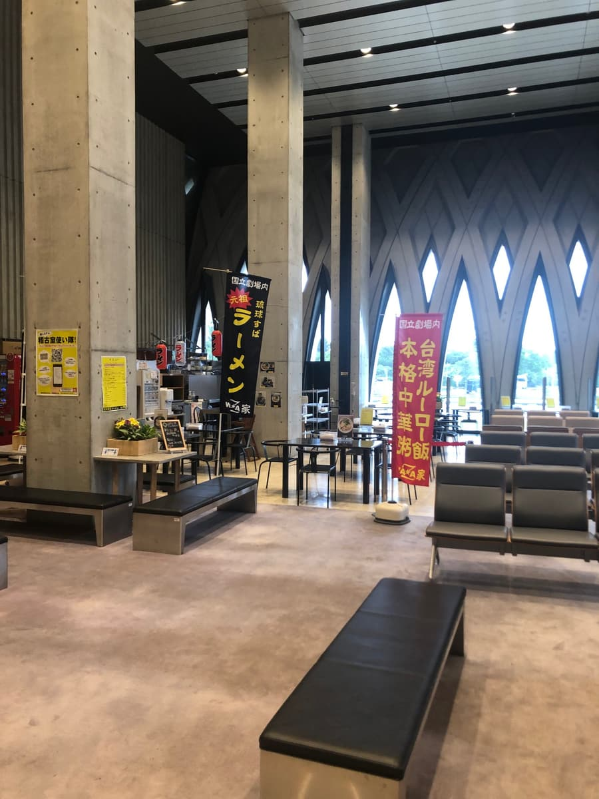
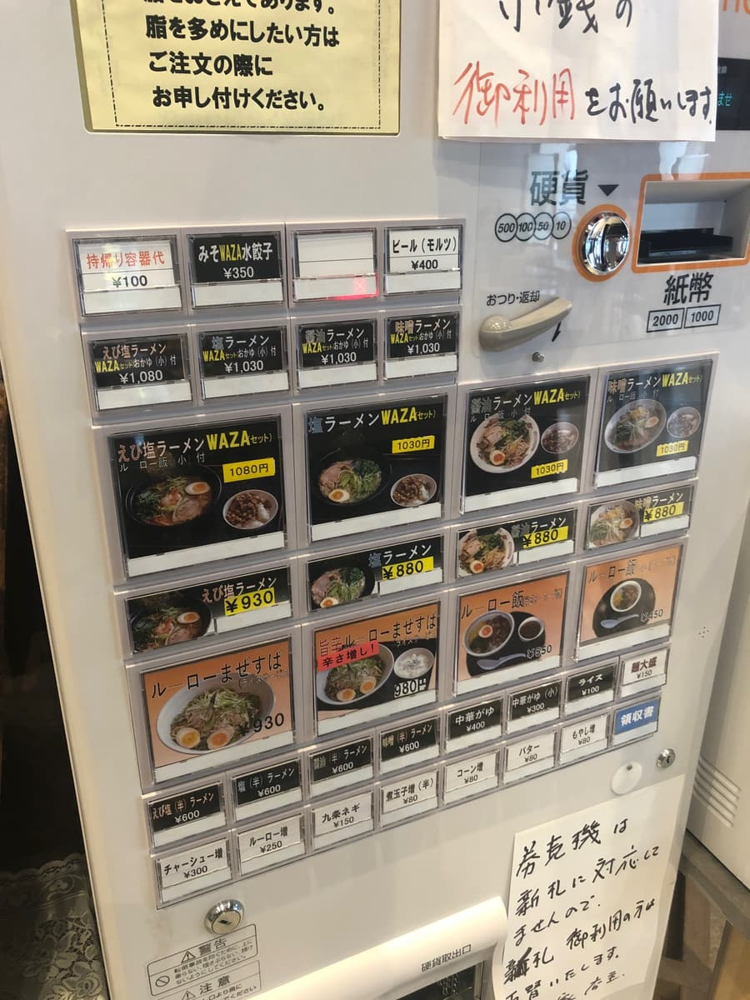
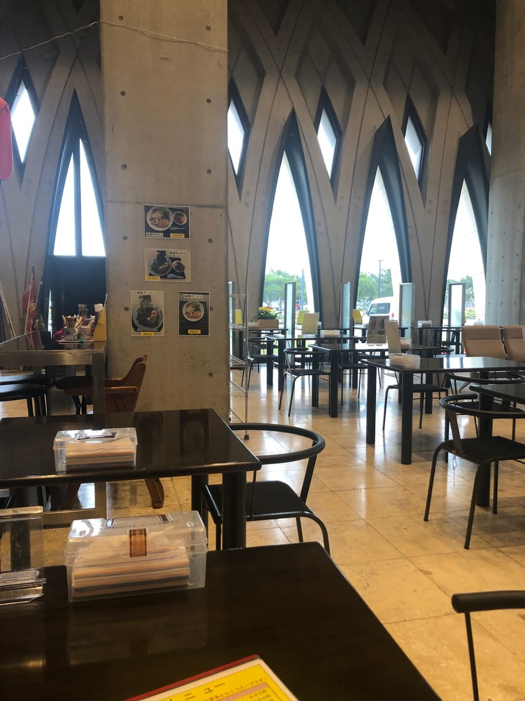
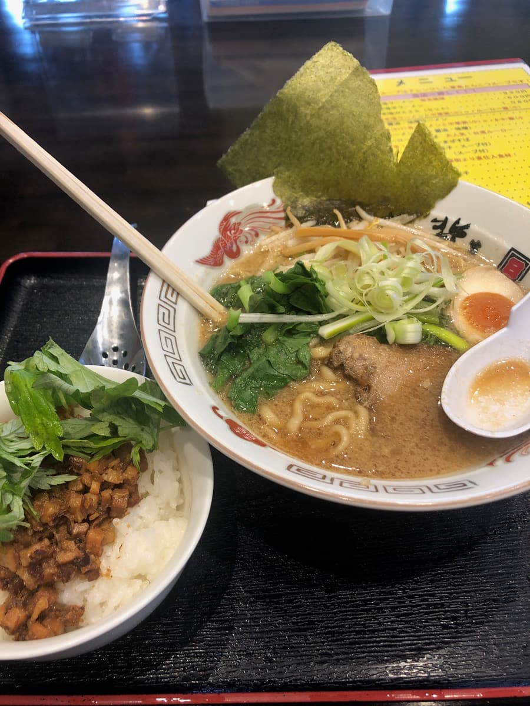
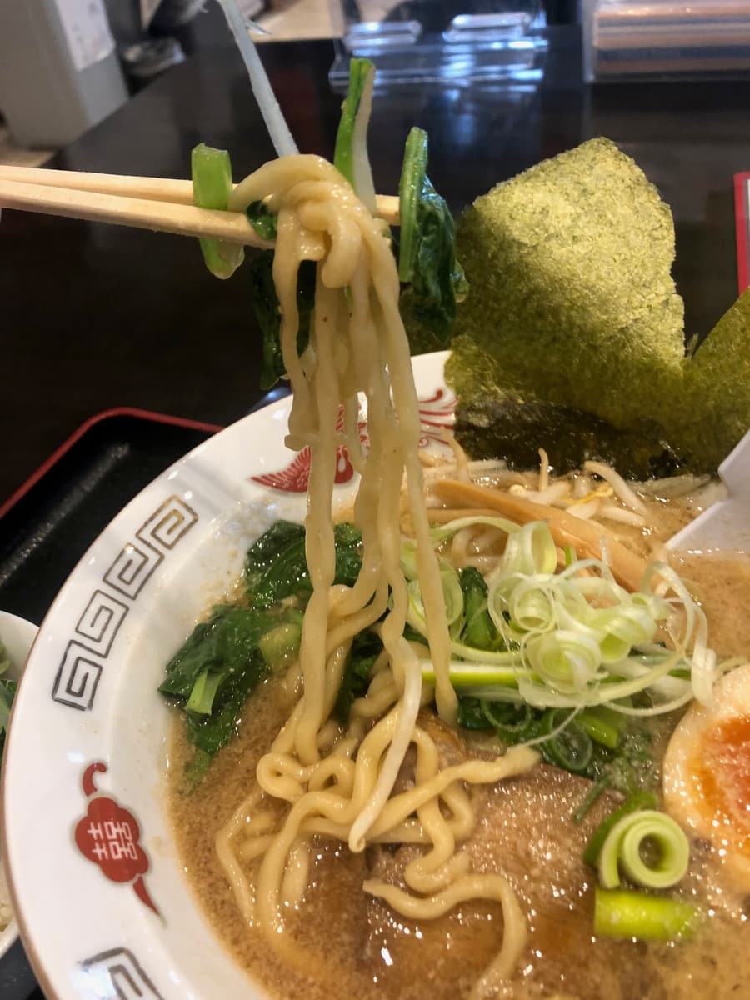

※這篇文章是由AI（Claude Haiku 4.5）撰寫，並由我部分補寫更新而成😆
2025年1月去吃的😁😊
位於浦添市勢理客的沖繩國立劇場。在這個可以盡情體驗沖繩傳統文化的設施裡，有一家有點特別的沖繩麵店呢。那就是「技家」。




🎭這次點的是「醬油拉麵附滷肉飯」套餐。旗幟上大大方方地寫著「琉球麵」，所以這絕對算是沖繩麵巡禮的計數對象呢😄

走進沖繩國立劇場館內呢，是一個比想像中更現代、更洗練的空間。清水混凝土的粗大柱子令人印象深刻，天花板也很高，氣氛很開放。就像咖啡廳一樣，不，是更現代，卻又飄著些許琉球氣息的奇妙空間呢。🪟從大窗戶可以眺望沖繩的自然景色。技家呢，就是在這個空間的一角開店的。正面有一面大大寫著「元祖琉球麵 技家」的旗幟在飄揚。點餐是售票機方式，從沖繩麵相關菜單到台灣拉麵，甚至還有煎餃和飯類，品項真的非常豐富。

好，「醬油拉麵」來了。😍湯頭好像是以濃厚的豬骨和昆布、柴魚高湯為基底。不過連是不是醬油味都分不太出來，是一種有點複雜、相當濃郁的味道。🍲最讓人在意的呢，就是這個湯頭。到底是沖繩麵風的高湯，還是正統拉麵，那條界線很模糊呢。很有個性，但感覺和一般的沖繩麵是不同的東西。

最大的看點呢，就是這個麵！🤩用的是沖繩麵的中粗麵。光看外表呢，就知道很Q彈。實際吃吃看呢，是生麵那種Q彈有勁的口感。只有麵完全是沖繩麵。這個部分真的做得很好呢。配料幾乎就是拉麵😅大塊的叉燒就這樣鎮坐在上面，還放了半熟蛋呢。
滷肉飯是承襲台灣拉麵的路線，把豬肉用味噌口味燉煮而成，滿滿地鋪在白飯上。上面還放了鴨兒芹呢。這個滷肉飯的調味也相當重，和拉麵一起吃，滿足度一下子就提升了。整體來說份量無可挑剔。份量多到讓人有點擔心一個人能不能吃完呢。
要用一句話形容技家呢，就是「用沖繩麵麵條做的拉麵」。不是完全的沖繩麵，但也不是完全的拉麵。硬要說的話，大概是「拉麵外型的沖繩麵」吧。旗幟上寫著「琉球麵」，也讓人感受到那份挑戰精神呢。😄正因為位在沖繩國立劇場這個文化設施裡，這種「傳統與創新的融合」的概念，或許才能被自然地接受吧。不只是觀光客，也有讓在地人能輕鬆順道一訪的氛圍呢。
評分（9分/15分）：是沖繩麵麵條的拉麵(^0^;)很正常的好吃的感覺。
麵：★★★☆☆（3）
湯頭：★★★☆☆（3）
配料：★★★☆☆（3）